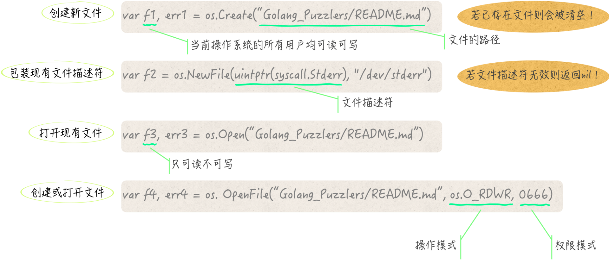

- 00 导读 写给0基础入门的Go语言学习者.md.html
- 00 导读 学习专栏的正确姿势.md.html
- 00 开篇词 跟着学，你也能成为Go语言高手.md.html
- 01 工作区和GOPATH.md.html
- 02 命令源码文件.md.html
- 03 库源码文件.md.html
- 04 程序实体的那些事儿（上）.md.html
- 05 程序实体的那些事儿（中）.md.html
- 06 程序实体的那些事儿 （下）.md.html
- 07 数组和切片.md.html
- 08 container包中的那些容器.md.html
- 09 字典的操作和约束.md.html
- 10 通道的基本操作.md.html
- 11 通道的高级玩法.md.html
- 12 使用函数的正确姿势.md.html
- 13 结构体及其方法的使用法门.md.html
- 14 接口类型的合理运用.md.html
- 15 关于指针的有限操作.md.html
- 16 go语句及其执行规则（上）.md.html
- 17 go语句及其执行规则（下）.md.html
- 18 if语句、for语句和switch语句.md.html
- 19 错误处理（上）.md.html
- 20 错误处理 （下）.md.html
- 21 panic函数、recover函数以及defer语句 （上）.md.html
- 22 panic函数、recover函数以及defer语句（下）.md.html
- 23 测试的基本规则和流程 （上）.md.html
- 24 测试的基本规则和流程（下）.md.html
- 25 更多的测试手法.md.html
- 26 sync.Mutex与sync.RWMutex.md.html
- 27 条件变量sync.Cond （上）.md.html
- 28 条件变量sync.Cond （下）.md.html
- 29 原子操作（上）.md.html
- 30 原子操作（下）.md.html
- 31 sync.WaitGroup和sync.Once.md.html
- 32 context.Context类型.md.html
- 33 临时对象池sync.Pool.md.html
- 34 并发安全字典sync.Map （上）.md.html
- 35 并发安全字典sync.Map (下).md.html
- 36 unicode与字符编码.md.html
- 37 strings包与字符串操作.md.html
- 38 bytes包与字节串操作（上）.md.html
- 39 bytes包与字节串操作（下）.md.html
- 40 io包中的接口和工具 （上）.md.html
- 41 io包中的接口和工具 （下）.md.html
- 42 bufio包中的数据类型 （上）.md.html
- 43 bufio包中的数据类型（下）.md.html
- 44 使用os包中的API （上）.md.html
- 45 使用os包中的API （下）.md.html
- 46 访问网络服务.md.html
- 47 基于HTTP协议的网络服务.md.html
- 48 程序性能分析基础（上）.md.html
- 49 程序性能分析基础（下）.md.html
- 尾声 愿你披荆斩棘，所向无敌.md.html
- 新年彩蛋 完整版思考题答案.md.html
- 捐赠
44 使用os包中的API （上）
我们今天要讲的是os代码包中的API。这个代码包可以让我们拥有操控计算机操作系统的能力。
前导内容：os包中的API
这个代码包提供的都是平台不相关的API。那么说，什么叫平台不相关的API呢？
它的意思是：这些API基于（或者说抽象自）操作系统，为我们使用操作系统的功能提供高层次的支持，但是，它们并不依赖于具体的操作系统。
不论是Linux、macOS、Windows，还是FreeBSD、OpenBSD、Plan9，os代码包都可以为之提供统一的使用接口。这使得我们可以用同样的方式，来操纵不同的操作系统，并得到相似的结果。
os包中的API主要可以帮助我们使用操作系统中的文件系统、权限系统、环境变量、系统进程以及系统信号。
其中，操纵文件系统的API最为丰富。我们不但可以利用这些API创建和删除文件以及目录，还可以获取到它们的各种信息、修改它们的内容、改变它们的访问权限，等等。
说到这里，就不得不提及一个非常常用的数据类型：os.File。
从字面上来看，os.File类型代表了操作系统中的文件。但实际上，它可以代表的远不止于此。或许你已经知道，对于类Unix的操作系统（包括Linux、macOS、FreeBSD等），其中的一切都可以被看做是文件。
除了文本文件、二进制文件、压缩文件、目录这些常见的形式之外，还有符号链接、各种物理设备（包括内置或外接的面向块或者字符的设备）、命名管道，以及套接字（也就是socket），等等。
因此，可以说，我们能够利用os.File类型操纵的东西太多了。不过，为了聚焦于os.File本身，同时也为了让本文讲述的内容更加通用，我们在这里主要把os.File类型应用于常规的文件。
下面这个问题，就是以os.File类型代表的最基本内容入手。我们今天的问题是：os.File类型都实现了哪些io包中的接口？
这道题的典型回答是这样的。
os.File类型拥有的都是指针方法，所以除了空接口之外，它本身没有实现任何接口。而它的指针类型则实现了很多io代码包中的接口。
首先，对于io包中最核心的3个简单接口io.Reader、io.Writer和io.Closer，*os.File类型都实现了它们。
其次，该类型还实现了另外的3个简单接口，即：io.ReaderAt、io.Seeker和io.WriterAt。
正是因为*os.File类型实现了这些简单接口，所以它也顺便实现了io包的9个扩展接口中的7个。
然而，由于它并没有实现简单接口io.ByteReader和io.RuneReader，所以它没有实现分别作为这两者的扩展接口的io.ByteScanner和io.RuneScanner。
总之，os.File类型及其指针类型的值，不但可以通过各种方式读取和写入某个文件中的内容，还可以寻找并设定下一次读取或写入时的起始索引位置，另外还可以随时对文件进行关闭。
但是，它们并不能专门地读取文件中的下一个字节，或者下一个Unicode字符，也不能进行任何的读回退操作。
不过，单独读取下一个字节或字符的功能也可以通过其他方式来实现，比如，调用它的Read方法并传入适当的参数值就可以做到这一点。
问题解析
这个问题其实在间接地问“os.File类型能够以何种方式操作文件？”我在前面的典型回答中也给出了简要的答案。
在我进一步地说明一些细节之前，我们先来看看，怎样才能获得一个os.File类型的指针值（以下简称File值）。
在os包中，有这样几个函数，即：Create、NewFile、Open和OpenFile。
os.Create函数用于根据给定的路径创建一个新的文件。 它会返回一个File值和一个错误值。我们可以在该函数返回的File值之上，对相应的文件进行读操作和写操作。
不但如此，我们使用这个函数创建的文件，对于操作系统中的所有用户来说，都是可以读和写的。
换句话说，一旦这样的文件被创建出来，任何能够登录其所属的操作系统的用户，都可以在任意时刻读取该文件中的内容，或者向该文件写入内容。
注意，如果在我们给予os.Create函数的路径之上，已经存在了一个文件，那么该函数会先清空现有文件中的全部内容，然后再把它作为第一个结果值返回。
另外，os.Create函数是有可能返回非nil的错误值的。
比如，如果我们给定的路径上的某一级父目录并不存在，那么该函数就会返回一个*os.PathError类型的错误值，以表示“不存在的文件或目录”。
再来看os.NewFile函数。 该函数在被调用的时候，需要接受一个代表文件描述符的、uintptr类型的值，以及一个用于表示文件名的字符串值。
如果我们给定的文件描述符并不是有效的，那么这个函数将会返回nil，否则，它将会返回一个代表了相应文件的File值。
注意，不要被这个函数的名称误导了，它的功能并不是创建一个新的文件，而是依据一个已经存在的文件的描述符，来新建一个包装了该文件的File值。
例如，我们可以像这样拿到一个包装了标准错误输出的File值：
file3 := os.NewFile(uintptr(syscall.Stderr), "/dev/stderr")
然后，通过这个File值向标准错误输出上写入一些内容：
if file3 != nil {
defer file3.Close()
file3.WriteString(
"The Go language program writes the contents into stderr.\n")
}
os.Open函数会打开一个文件并返回包装了该文件的File值。 然而，该函数只能以只读模式打开文件。换句话说，我们只能从该函数返回的File值中读取内容，而不能向它写入任何内容。
如果我们调用了这个File值的任何一个写入方法，那么都将会得到一个表示了“坏的文件描述符”的错误值。实际上，我们刚刚说的只读模式，正是应用在File值所持有的文件描述符之上的。
所谓的文件描述符，是由通常很小的非负整数代表的。它一般会由I/O相关的系统调用返回，并作为某个文件的一个标识存在。
从操作系统的层面看，针对任何文件的I/O操作都需要用到这个文件描述符。只不过，Go语言中的一些数据类型，为我们隐匿掉了这个描述符，如此一来我们就无需时刻关注和辨别它了（就像os.File类型这样）。
实际上，我们在调用前文所述的os.Create函数、os.Open函数以及将会提到的os.OpenFile函数的时候，它们都会执行同一个系统调用，并且在成功之后得到这样一个文件描述符。这个文件描述符将会被储存在它们返回的File值中。
os.File类型有一个指针方法，名叫Fd。它在被调用之后将会返回一个uintptr类型的值。这个值就代表了当前的File值所持有的那个文件描述符。
不过，在os包中，除了NewFile函数需要用到它，它也没有什么别的用武之地了。所以，如果你操作的只是常规的文件或者目录，那么就无需特别地在意它了。
最后，再说一下os.OpenFile函数。 这个函数其实是os.Create函数和os.Open函数的底层支持，它最为灵活。
这个函数有3个参数，分别名为name、flag和perm。其中的name指代的就是文件的路径。而flag参数指的则是需要施加在文件描述符之上的模式，我在前面提到的只读模式就是这里的一个可选项。
在Go语言中，这个只读模式由常量os.O_RDONLY代表，它是int类型的。当然了，这里除了只读模式之外，还有几个别的模式可选，我们稍后再细说。
os.OpenFile函数的参数perm代表的也是模式，它的类型是os.FileMode，此类型是一个基于uint32类型的再定义类型。
为了加以区别，我们把参数flag指代的模式叫做操作模式，而把参数perm指代的模式叫做权限模式。可以这么说，操作模式限定了操作文件的方式，而权限模式则可以控制文件的访问权限。关于权限模式的更多细节我们将在后面讨论。
- （获得os.File类型的指针值的几种方式）
到这里，你需要记住的是，通过os.File类型的值，我们不但可以对文件进行读取、写入、关闭等操作，还可以设定下一次读取或写入时的起始索引位置。
此外，os包中还有用于创建全新文件的Create函数，用于包装现存文件的NewFile函数，以及可被用来打开已存在的文件的Open函数和OpenFile函数。
总结
我们今天讲的是os代码包以及其中的程序实体。我们首先讨论了os包存在的意义，和它的主要用途。代码包中所包含的API，都是对操作系统的某方面功能的高层次抽象，这使得我们可以通过它以统一的方式，操纵不同的操作系统，并得到相似的结果。
在这个代码包中，操纵文件系统的API最为丰富，最有代表性的就是数据类型os.File。os.File类型不但可以代表操作系统中的文件，还可以代表很多其他的东西。尤其是在类Unix的操作系统中，它几乎可以代表一切可以操纵的软件和硬件。
在下一期的文章中，我会继续讲解os包中的API的内容。如果你对这部分的知识有什么问题，可以给我留言，感谢你的收听，我们下期再见。
© 2019 - 2023 Liangliang Lee. Powered by gin and hexo-theme-book.